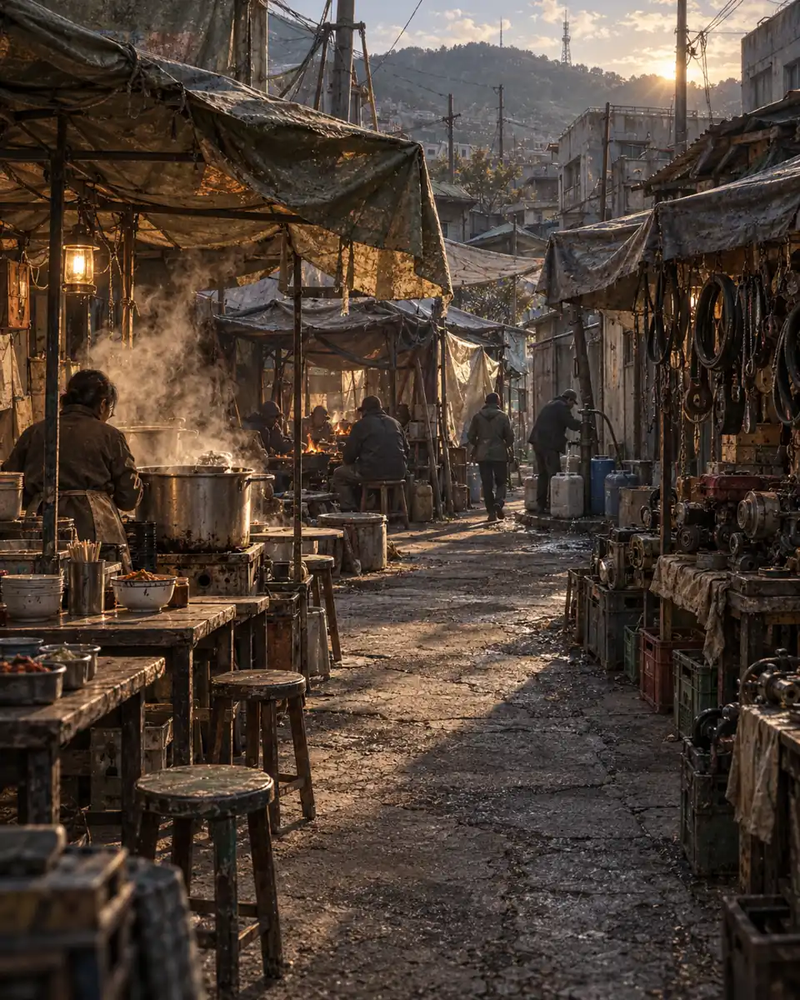
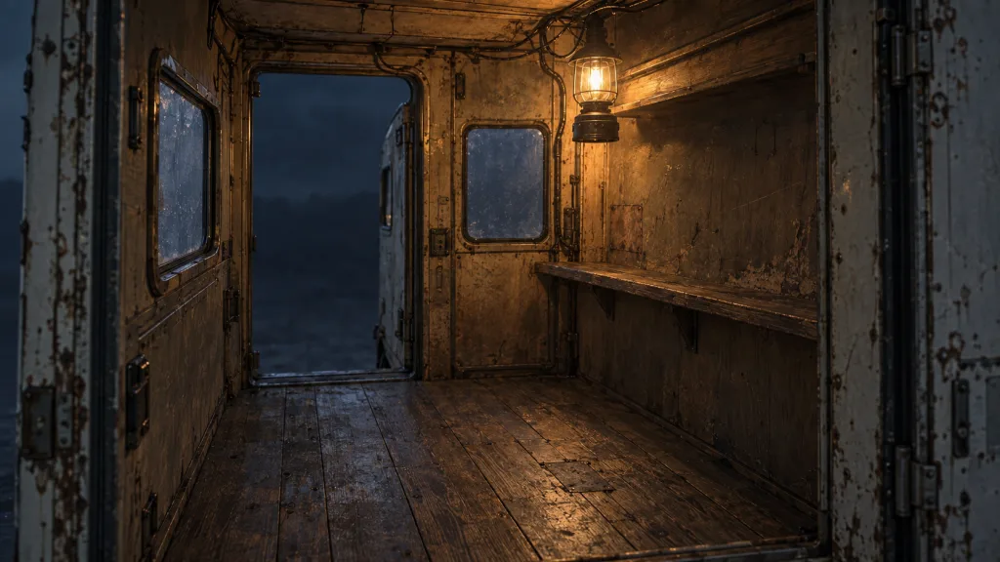

CARAVAN · ART & MOTION DIRECTION
길은 흐르고.
사람은 머물고.
여행은 남는다.
차가 달릴 때의 진동, 시장 솥의 김,
하루가 끝난 차 안의 등 하나.
우편부에서 확인한 방향을 게임 전체로 넓히는 연출 연구입니다.
기존 정본 그림 위의 CSS 분위기 예시이며 실제 게임과 분리되어 있어요.
길 위에서는, 움직일 이유가 보이게.


밀양 외곽 주행 분위기 예시
멀리 있는 산보다,
발밑의 길이 더 빨리 흐른다.
- 이미 있는 것바퀴·차체 진동·연기·날씨·감속
- 다음으로 다듬을 것발견→쳐다봄→인사→접근의 인물 동작과 타이밍
- 움직임의 기준바퀴는 거리, 짐은 충격, 옷은 바람에 반응
도시에서는, 살아가는 일이 보이게.

밀양 장터 늦은 오후 · 고정된 예시
국밥집은 김으로.
정비소는 손놀림으로.
- 이미 있는 것도시별 공간·인물 이동·시설 접근·선택 표시
- 다음으로 다듬을 것국밥집 김, 정비 손짓, 상인의 짧은 인사처럼 장소별 행동
- 움직임의 기준그려진 익명 행인과 실제 이름 있는 주민을 구분
야영에서는, 함께 사는 흔적이 보이게.

달구지 안 등 하나 · 빈 생활 공간 예시
밖은 차갑게.
우리가 머무는 자리는 따뜻하게.
- 이미 있는 것실제 동료·개조·저장된 기억에 따라 놓이는 물건
- 다음으로 다듬을 것보유한 물건을 쓰는 동작과 동료의 역할별 짧은 생활 장면
- 움직임의 기준없는 주전자·동료·편지를 분위기 장식으로 만들어 넣지 않기
대화는 얼굴에.
선택은 물건과 기억에.
우편부 시안의 짙은 녹색, 미색 글씨, 절제된 황동색을 공유합니다. 장면과 글 사이의 단단한 경계를 줄이고, 현재 말과 결정할 행동에 시선을 모읍니다.
긴 문서·전투·긴 선택지는 각각에 맞는 화면을 유지합니다. 그림 속 얼굴을 억지로 흔들거나, 모든 문장에 효과를 붙이지 않습니다.
대화와 선택을 직접 보기 ↗MAKING IT REAL
그림은 도구에서.
살아 있는 반응은 게임 안에서.
- 한 사람의 동작부터정지·걷기·인사·작업을 같은 비율과 발 기준점으로 제작
- 움직임과 조건을 함께기다리기·발견·접근·행동·퇴장을 실제 사건 단계에 연결
- 대표 장면으로 검수우편부 → 밀양 장터 → 첫 동료와 야영 → 공통 화면
- 실제 크기와 기기에서휴대폰의 인물 크기, 글씨, 프레임 시간, 멈춤과 복원을 확인
17개 도구를 쓰는 기준
Aseprite와 Pixelorama는 제작용 주 후보이며 둘 중 하나를 중심으로 씁니다. PixiEditor는 레이어·효과 연구용 후보입니다.
Piskel·LibreSprite·PixelCraft는 보조 제작 대안. pixel-art-react·Data-Pixels·pixel8은 작은 효과나 구현 방식의 참고 대상으로 둡니다.
poxi·goya·rx·Lospec Pixel Editor·pixel-paint·Pixa.Pics·Pixed·voidsprite는 현재 목표를 더 잘 해결할 때만 재검토합니다. 모두 설치하거나 게임에 묶어 넣지 않습니다.
도구 도입·새 프레임 제작·게임 연결은 아직 수행하지 않았습니다. 이 페이지의 추가 움직임은 CSS 분위기 실험입니다. 그려진 김·인물 자체를 분리해 움직인 것은 아닙니다.